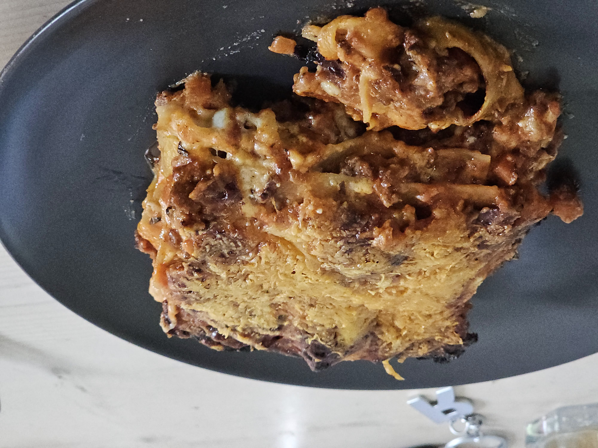

Home
Lasanga Bolognese

The deceptively simply yet incredibly tasty lasanga bolognese. A dish that requires some patience to prepare but that patience will be rewarded with a rich and flavorful meal that, for a moment, will make you feel like you're dining in Italy.
Ingredients
- 500 grams pork and beef miced meet
- 1 onion (finely chopped)
- 1 carrot (finely chopped)
- 1 stem of celery (finely chopped)
- 2 cloves of garlic (finely chopped)
- 2 table spoons of tomato puree
- 400 grams tomato passata
- 120ml of red wine
- 1 teaspoon dried oregano
- 1 teaspoon dried basil
- salt and pepper
- 50 grams of real butter
- 50 grams of flower
- 500ml of milk
- pinch of nutmeg
- salt
- 12 lasanga sheets (fresh or dried)
- 150 grams of grated parmesan cheese
Preperation
- Chop your vegetables. Make them as finely chopped as possible.
- Heat up a little olive oil in a pan. Once up to temperature add the onion, carrot and celery. Cook until it starts to go soft.
- Add the garlic and cook for another minute or so.
- Add the minced meet and cook until golden brown. Break it into small pieces.
- Add the tomato puree and cook for about a minute. Then add the tomato passata, red wine, oregano, basil, salt and pepper. Mix thoroughly and bring to a boil. Once at a boil turn down the heat and let simmer for 30-40 minutes.
- In the meantime prepare the bechamel sauce. Melt the butter in a pan on low to medium heat. Once melted add the flower and stir to form a roux. Slowly add milk while stirring to avoid clumps. Let it thicken until you get a nice and smooth béchamel sauce. Add a pinch of nutmeg and salt to flavor. Be careful not to overdo it with the nutmeg or it can overpower the flavor of the sauce.
- Preheat the oven to 180º C. If using fresh lasanga sheets check cooking instructions.
- Time to start layering. Start with a layer of sauce and make it as thin as possible. You're basically just using the sauce as a coating. Add a couple of lasanga sheets, followed by a layer of béchamel sauce. Repeat these steps until all ingredients are gone, ending with a layer of bolognese sauce. Sprinkle with a good layer of grated parmesan.
- Bake in the oven for 30-40 minutes or until the top starts to become golden brown. If it gets too dark you can cover it with aluminum foil.
- Take the lasanga out of the oven and let it settle for a few minutes so it can firm up and it becomes easier to slice.
- Cut up the lasanga and serve. If desired you can garnish it with some fresh basil or parsely.